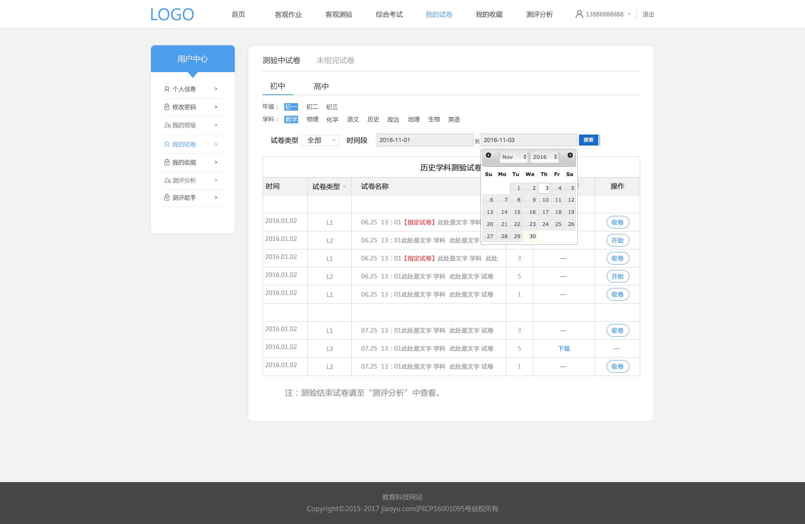

如果此登录账号为初中，则此处高中选项不能选择。


选项有“全部”“客观作业”客观测验“”综合考试“4个，单选
此日历最好能找到中文版，日历效果需前端交互设计

此为页面说明，字“注”的字体为红色
只有L3类型的试卷拥有下载为pdf的功能，L1和L2不具备
L3试卷没有“开始和收卷”功能
L1L2类型的试卷拥有开始和收卷功能，L3类型试卷不具备
测验中试卷，在此处没有点击［开始］前，学生端不能通过试卷代码调取此份试卷
测验中试卷，在点击［收卷］后，学生端未能完成该试卷答案提交的，将不能提交此份试卷的答案，系统也不能纪录到该学生的试卷得分
在点击［收卷］后，该份试卷会从测验中试卷的分类中删除，自动移动到“C3-测评分析-列表”页中
此时间为试卷的生成时间
按时间倒序排列


默认区间为最近的3个月
此页有分页功能，每页最多显示15条
此为试卷名称，
点击进入C1.3-试卷预览
显示题目题干全部，超过长度不能全部显示的，给予一个固定的显示长度，后面用...表示
但是鼠标停放在这个知识点标签时，会以类似于excel中批注的形式出现知识点的全名
需要前端做此交互
每页面，最多显示15道题目，如有更多需分页显示；